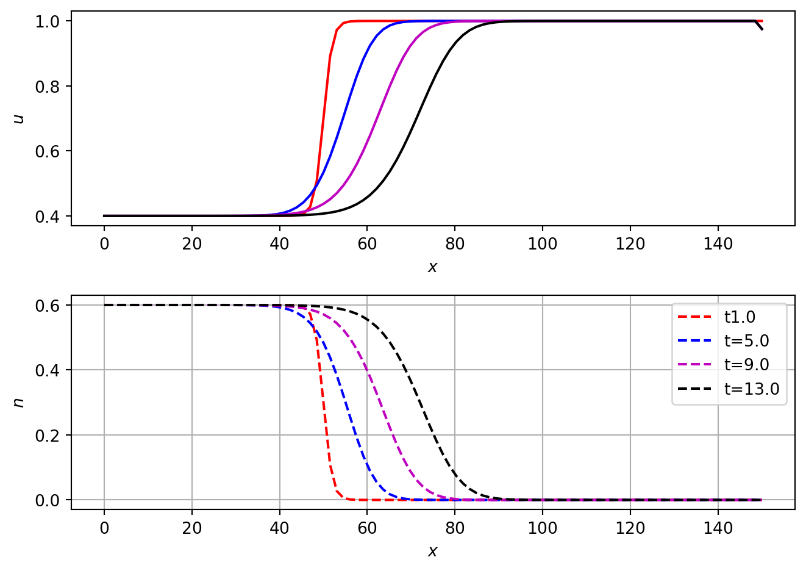
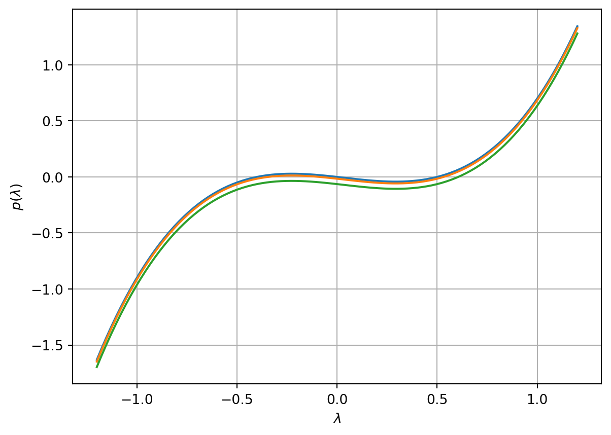

Consider a predator-prey system (modified Lotka-Voltera equations) with diffusion of both the prey and the predator species. Suppose that the reaction kinetics are given by:
prey undergoes logistic growth in the absence of predator.
the predation rate is proportional to the amount of predator
predator growth rate is proportional to the amount of prey
predator undergoes natural degradation
Let \(u(x,t)\) and \(n(x,t)\) represent the density of the prey and predator, respectively. The governing equations are: \[
\begin{aligned}
\frac{\partial u}{\partial t} &= \rho \, u \left( 1 - \frac u K\right) - \alpha\, u \, n + D_u \Delta u, \\
\frac{\partial n}{\partial t} &= \beta \; u\, n - \gamma \; n + D_n \Delta n,
\end{aligned}
\tag{4.1}\]
where \(\rho\) is the prey linear growth rate, \(K\) is the prey carrying capacity, \(\beta\) is predator growth rate per unit prey, \(\alpha\) is the prey removal rate per unit predator, \(\gamma\) is predator natural death rate, \(D_u\) is diffusion coefficient of the prey and \(D_n\) is the diffusion coefficient for the predator.
We will consider one spatial dimension such that \(x\in \mathbb R\) and \(t>0\).
THe boundary conditions are assumed to be Dirichlet (i.e. the values of \(u\) and \(n\) are prescribed).
4.1 Nondimensionalization
Consider the scaling \[
x^\ast = x \sqrt{\frac \rho {D_n}}, \qquad t^\ast = \rho, t , \quad u^\ast = \frac uK, \quad n^\ast = n \frac \alpha \rho.
\] Upon dropping the asteriked notation, Equation 4.1 transform to \[
\begin{cases}
&\dfrac{\partial u}{\partial t} = u ( 1 - u - n) + D \dfrac{\partial^2 u}{\partial x^2}\; = \; f(u,n) + D\dfrac{\partial^2 u}{\partial x^2} \qquad x\in \mathbb R , t>0 \,, \\
& \dfrac{\partial n}{\partial t} = a\, n(u -b) + \dfrac{\partial^2 n}{\partial x^2}\; =\; \; g(u,n) + \dfrac{\partial^2 n}{\partial x^2}\; \qquad x\in \mathbb R , t>0,
\end{cases}
\tag{4.2}\] where \[
D= \dfrac{D_u}{D_n}, \quad a = \dfrac{\beta K}\rho, \quad b = \dfrac \gamma{ K \beta}.
\]
4.2 Numerical solutions
In Figure 4.1 we plot numerical solution of Equation 4.2. No flux boundary conditions are imposed at \(x=0\) and \(x=150\).
Code
import numpy as npfrom scipy.integrate import odeintimport matplotlib.pyplot as plt# Define domain and discretiseT=100L=150N_x=100N_t=100t=np.linspace(1,T,N_t)x=np.linspace(0,L,N_x)dx=L/(N_x-1)dt=T/(N_t-1)# Define model parametersa=0.2b=0.4D_u=0.10u_L= bu_R=1.0n_L=1-bn_R=0.0# Define initial conditionsu_0=b+(1-b)*0.5*(1+np.tanh(1*0.5*(x-50)))n_0=(1-b)*0.5*(1+np.tanh(-1*0.5*(x-50)))u_0=np.concatenate((u_0,n_0))# Compute rhs of discretised ODEsdef LVPDErhs(sol,t): N_x=int(np.ceil(len(sol)/2)) u=sol[0:N_x] n=sol[N_x:2*N_x] f_u=np.zeros_like(u) f_n=np.zeros_like(u)for i inrange(1,N_x-2): f_u[i]=D_u/dx**2*(u[i-1]-2*u[i]+u[i+1]) i=0 f_u[i]=D_u/dx**2*(u_L-2*u[i]+u[i+1]) i=N_x-1 f_u[i]=D_u/dx**2*(u_L-2*u[i]+u_R) for i inrange(1,N_x-2): f_n[i]=1/dx**2*(n[i-1]-2*n[i]+n[i+1]) i=0 f_n[i]=1/dx**2*(n_L-2*n[i]+n[i+1]) i=N_x-1 f_n[i]=1/dx**2*(n[i-1]-2*n[i]+n_R) reaction_u=u*(1-u-n) reaction_n=a*n*(u-b) f_u=f_u+reaction_u f_n=f_n+reaction_n f= np.concatenate((f_u, f_n)) return f # Solve discretised ODEssol=odeint(LVPDErhs,u_0,t)u=sol[:,0:N_x]n=sol[:,N_x:2*N_x]# Plot solutionsfig, ax = plt.subplots(2,1)ax[0].plot(x,u[0,:],'r')ax[0].plot(x,u[16,:],'b')ax[0].plot(x,u[32,:],'m')ax[0].plot(x,u[48,:],'k')ax[0].set_xlabel('$x$')ax[0].set_ylabel('$u$')ax[1].plot(x, n[0,:],'r--')ax[1].plot(x, n[16,:],'b--')ax[1].plot(x, n[32,:],'m--')ax[1].plot(x, n[48,:],'k--')ax[1].set_xlabel('$x$')ax[1].set_ylabel('$n$')plt.legend(['t'+str(t[0]),'t='+str(t[4]),'t='+str(t[8]),'t='+str(t[12])])plt.xlabel('$x$')plt.grid()plt.tight_layout()plt.show()

Figure 4.1: Numerical solution of LV model. \(a\)=0.2. \(b\)=0.4.
4.3 Spatially homogeneous steady states
We firstly consider spatially homogeneous steady states, i.e. \[
f(u,n) =0, \quad g(u,n) = 0.
\] Thus \[
\begin{aligned}
&u(1-u-n) = 0, \quad u =0, \quad u+n=1,\\
& an(u-b) = 0, \quad n =0, \quad u =b.
\end{aligned}
\] Thus the steady states are \[
(u_1^\ast, n_1^\ast)= (0,0), \quad (u_2^\ast, n_2^\ast)= (1,0), \quad (u_3^\ast, n_3^\ast)= (b,1-b), \, 0\leq b <1.
\]
4.4 Stability of steady states to spatially homogeneous perturbations
The Jacobian matrix is \[
\begin{aligned}
J(u_j^\ast, n^\ast_j) =
\begin{pmatrix}
1-2u -n & -u \\
an &a(u-b)
\end{pmatrix}_{(u^\ast_j, n^\ast_j)}, \quad j = 1,2,3.
\end{aligned}
\]
At the steady state \[
(u_1^\ast, n_1^\ast)= (0,0)
\]
the characteristic equation is \[
\det(J (0,0) - \lambda I) = - (1- \lambda)(\lambda+ ab) = 0.
\]
The eigenvalues are \[
\lambda_1^+ = 1, \quad \lambda_1^- = - ab <0.
\]
If \[
4 ab (1-b) \leq b^2 \implies \lambda_3^{\pm} < 0,
\] (\(b,1-b\)) is a stable node.
If \[
4 ab (1-b) > b^2 \qquad \implies \Re(\lambda_3{\pm}) < 0, \Im(\lambda_3^{\pm}) \neq 0,
\] (\(b,1-b\)) is a stable focus (spiral).
For \(b>0\), \(1-b>0\) spiral oscillations are biologically realistic so long \(u>0\) and \(n>0\).
4.5 Existence of travelling wave profiles connection \((1,0)\) and \((b,1-b)\)
Condider the travelling wave ansatz\[
\begin{aligned}
u(t,x) &= W(x+ vt) = W(z), \quad v>0, \\
n(t,x) &= N( x + vt) = N(z), \quad v >0.
\end{aligned}
\]
We consider boundary conditions that connect \((1,0)\) to \((b,1-b)\), i.e. \[
\begin{aligned}
u(t,x) \to 1 \; \text{ as } x \to - \infty, & \; \qquad W(z)\to 1 \; \text{ as } z \to - \infty, \quad\\
u(t,x) \to b \; \text{ as } x \to +\infty, & \; \qquad W(z)\to b \; \text{ as } z \to + \infty, \\
n(t,x) \to 0 \; \text{ as } x \to - \infty , &\qquad \; N(z)\to 0 \; \text{ as } z \to - \infty, \quad \\
n(t,x) \to 1-b \; \text{ as } x \to +\infty, & \; \qquad N(z)\to 1-b \; \text{ as } z \to +\infty.
\end{aligned}
\]
Equation 4.2 transforms to \[
\begin{aligned}
v \frac{dW}{dz} &= D \frac{d^2W}{dz^2} + W(1-W-N),\\
v \frac{dN}{dz} &= \frac{d^2N}{dz^2} + a N(W-b),
\end{aligned}
\]
with boundary conditions given by \[
\begin{aligned}
& W(z)\to 1 \; \text{ as } z \to - \infty, \quad W(z)\to b \; \text{ as } z \to + \infty, \\
& N(z)\to 0 \; \text{ as } z \to - \infty, \quad N(z)\to 1-b \; \text{ as } z \to +\infty.
\end{aligned}
\tag{4.3}\]
Upon making the assumption that the prey moves much more slowly than the predator species, i.e. \[
D= \frac{D_u}{D_n} \ll 1,
\]
\[
\begin{aligned}
v \frac{dW}{dz} &= W(1-W-N) ,\\
v \frac{dN}{dz} &= \frac{d^2N}{dz^2} + a N(W-b).
\end{aligned}
\tag{4.4}\]
We can rewrite Equation 4.4 as a system of first order ODEs: \[
\begin{aligned}
\frac{dW}{dz} &= \frac 1 v W(1-W-N) = F(W,N,P),\\
\frac{dN}{dz} &= P = G(W, N,P),\\
\frac{dP}{dz} &= v P - a N(W-b) = R(W,N,P).
\end{aligned}
\tag{4.5}\]
The steady states of Equation 4.5 are \[
\begin{aligned}
(W^\ast_1, N^\ast_1, P^\ast_1) &= (0,0,0),\\
(W^\ast_2, N^\ast_2, P^\ast_2) &= (1,0,0), \\
(W^\ast_3, N^\ast_3, P^\ast_3) &=(b, 1-b, 0).
\end{aligned}
\]
The Jacobian matrix is \[
J(W,N,P) = \begin{pmatrix}
\dfrac 1 v - \dfrac{2W} v - \dfrac Nv & - \dfrac Wv & 0 \\
0 & 0 & 1 \\
- aN & a(b-W) & v
\end{pmatrix}.
\]
At \[
(W^\ast_1, N^\ast_1, P^\ast_1) = (0,0,0)
\]
we have \[
\det(J(0,0,0) - \lambda I)= \left( \frac 1 v - \lambda\right) (\lambda^2 - \lambda v - ab) =0
\] and \[
\lambda_1^1= \frac 1 v > 0, \quad \lambda_2^{\pm} = \frac{ v \pm \sqrt{v^2 + 4 ab} } 2.
\]
Thus \((0,0,0)\) is a saddle point with a \(2\)-dim unstable manifold.
At \((W^\ast_2, N^\ast_2, P^\ast_2) = (1,0,0)\) we have \[
\det(J(1,0,0) - \lambda I)= \left(- \frac 1 v - \lambda\right) (\lambda^2 - \lambda v + a(1-b)) =0,
\]
and \[
\lambda_1^1= -\frac 1 v < 0, \quad \lambda_2^{\pm} = \frac{ v \pm \sqrt{v^2 - 4 a(1-b)} } 2.
\]
Since \[
0\leq b < 1 and 4(1-b)>0,
\]
If \(v^2 \geq 4 a(1-b)\), (1,0,0) is a saddle with 2-dim unstable manifold.\
If \(v^2 < 4 a(1-b)\) (1,0,0)is an unstable focus
Thus for a travelling wave with \(W\geq 0\) and \(N \geq 0\) to exist we require \[
v^2 \geq 4 a(1-b)
\]
and obtain a minimal wave speed \[
v_\text{min}=2\sqrt{a(1-b)} \quad \text{ with } \quad 0\leq b<1.
\]
At \[
(W^\ast_3, N^\ast_3, P^\ast_3) =(b, 1-b, 0)
\] we have \[
\det(J(b,1-b,0) - \lambda I)= \lambda^3 - \lambda^2(v- \frac b v) - \lambda b - \frac 1 v ab(1-b) = p(\lambda) =0.
\]
It can be shown that the extrema of \(p(\lambda)\) are independent of the parameter \(a\).
To identify extrema, we compute \[
p^\prime(\lambda) = 3 \lambda^2 - 2 \lambda \left( v - \frac b v\right) - b = 0
\]
and find that \[
\lambda_{m,M}= \frac 13 \left[ \left(v - \frac bv \right) \pm \sqrt{ \left(v - \frac bv\right) ^2 + 3 b } \right].
\]
If \(a=0\), the eigenvalues are \[
\lambda_3^1 = 0, \quad \lambda_3^\pm = \frac 12 \left( v - \frac bv \pm \sqrt{\left(v - \frac bv\right)^2 + 4 b} \right).
\]
Thus there exists a critical value \(a^\ast>0\) such that for \(a \in (0, a^\ast)\), we obtain two real negative eigenvalues and one positive real eigenvalue. Hence \((b, 1-b, 0)\) is a saddle with \(2\)-dim stable manifold and \(1\)-dim unstable manifold
For \(a>a^\ast\), we obtain a pair of complex conjugate eigenvalues with negative real part and one real positive eigenvalue corresponding to \(1\)-dim unstable manifold.
This can be easily seen from a sketch of the cubic equation:
\[
p(\lambda) = \lambda^3 - \lambda^2(v- \frac b v) - \lambda b - \frac 1 v ab(1-b).
\]
Code
import numpy as npimport matplotlib.pyplot as plt# discretise lambdalam=np.linspace(-1.2,1.2,100)# Define parametersa=0.0a2=0.05a3=0.2b=0.2v=0.5# Compute polynomialsp1= lam**3-lam**2*(v-b/v)-lam*b-1/v*a*b*(1-b)p2= lam**3-lam**2*(v-b/v)-lam*b-1/v*a2*b*(1-b)p3= lam**3-lam**2*(v-b/v)-lam*b-1/v*a3*b*(1-b)# plotfig, ax= plt.subplots()ax.plot(lam,p1,lam,p2,lam,p3)ax.set_xlabel('$\lambda$')ax.set_ylabel('$p(\lambda$)')ax.grid(True)

Figure 4.2: Plot of cubic.
Thus we have a possible heteroclinic connection between \((1,0,0)\) and \((b, 1-b, 0)\), i.e. between \(2\)-dim unstable manifold at \((1,0,0)\) and \(2\)-dim stable manifold at \((b, 1-b, 0)\), and therefore an existence of a travelling wave front solution for Equation 4.2 with
\[
\begin{aligned}
u(x,t) \to 1 \; \textrm{ as } x \to - \infty, \quad & u(x,t) \to b \; \textrm{ as } x \to +\infty, \\
n(x,t) \to 0 \; \textrm{ as } x \to - \infty , \quad & n(x,t) \to 1-b \; \textrm{ as } x \to +\infty.
\end{aligned}
\]
4.6 Exercise
Use Python code to numerically investigate dependence of travelling wave solution on the parameter \(a\).